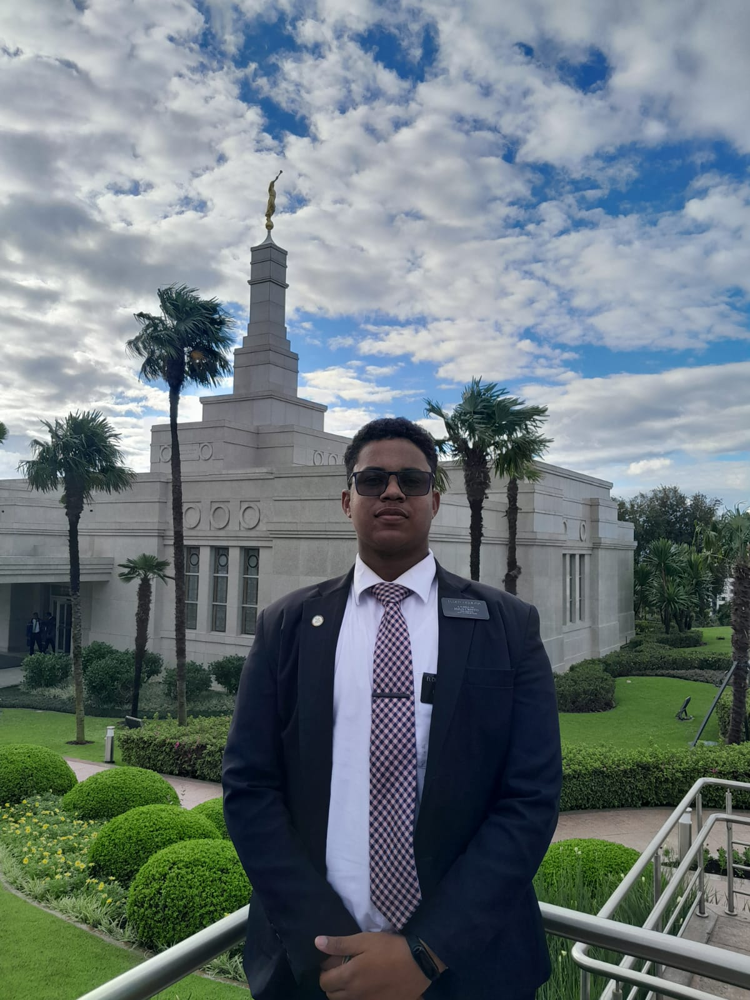

Ola, tudo bem?
Eu sou Victor Figueira
Sou natural de Recife, Pernambuco, e atualmente sou estudante
de Análise e Desenvolvimento de Sistemas na CESAR School,
um centro de referência em tecnologia e inovação no Recife.
Além descobrir meus estudos na CESAR School, estou matriculado
no BYU Pathway Worldwide, uma instituição americana que oferece
ensino a distância. Esse curso me proporciona a oportunidade
de desenvolver minhas habilidades em programação e
aprimorar
meu inglês, uma vez que todo o conteúdo é ministrado no idioma.
Tenho 20 anos e sou extremamente otimista quanto ao meu futuro
profissional na área de tecnologia. Estou sempre em busca de
oportunidades para crescer e aprender, tanto no ambiente
acadêmico
quanto no pessoal. Nos meus momentos de lazer, gosto
muito
de assistir séries e filmes, além de aproveitar a praia,
que é um
dos meus lugares favoritos. Sou apaixonado por
entender como
as coisas funcionam, o que me motiva a explorar
e descobrir mais
sobre o mundo da tecnologia e além.
Recife minha cidade natal
Recife é uma cidade que me encanta a cada dia. A mistura de cultura, história e beleza natural é simplesmente fascinante. Conhecida como a "Veneza Brasileira", com seus rios e pontes, passear por suas ruas é como explorar um verdadeiro museu ao ar livre. A arquitetura colonial, com influências holandesas, me faz sentir a história pulsando a cada esquina. E o Carnaval aqui é algo único! Os ritmos do frevo e do maracatu tomam conta da cidade, criando uma energia contagiante. Não posso deixar de mencionar as praias. A Praia de Boa Viagem, com suas águas quentes e coqueiros, é meu refúgio. É um lugar perfeito para relaxar e aproveitar o sol. Recife, com sua mistura de tradição e modernidade, definitivamente tem um lugar especial no meu coração.

Bahh tchê
Além de Recife, tive a oportunidade de morar no Rio Grande do Sul por dois anos, onde fui missionário da Igreja de Jesus Cristo dos Santos dos Últimos Dias. Essa experiência foi profundamente transformadora. Durante esse período, viajei por diversas cidades, conheci pessoas incríveis e aprendi muito sobre a cultura local. Fui acolhido por famílias que compartilharam suas histórias e tradições, o que me permitiu entender melhor a diversidade do Brasil. Ser missionário me proporcionou a chance de ajudar os outros de maneiras significativas, seja através de serviço comunitário, apoio emocional ou ensinamentos. Cada interação foi uma lição, e a gratidão que recebi em troca foi inestimável. A vivência no sul do Brasil me ensinou a valorizar a simplicidade e a força da comunidade, e essas lições permanecem comigo até hoje. Essa combinação de experiências em Recife e no Rio Grande do Sul moldou quem sou. Ambas as regiões, com suas características únicas, enriqueceram minha vida e ampliaram minha visão de mundo.